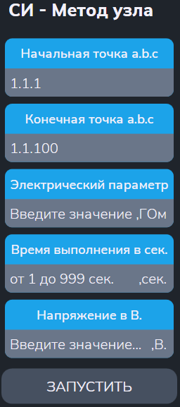

Тест СИ методом узла
Тест позволяет измерить сопротивление изоляции коммутатора методом полного узла.
Сначала появляется меню (см. рисунок 1):

Параметры
- "Начальная точка a.b.c" и "Конечная точка a.b.c" - начальный и конечный адресс диапазона проверяемых точек;
- "Электрический параметр" — заданное значение сопротивления для пороговой проверки (в ГОм);
- "Время выполнения в сек" - времня выполнения (в сек);
- "Напряжение в В" - измерительное напряжение (в В).
Алгоритм проверки
Подготовка:
- Установить заданный режим высоковольтной испытательной установки и подключить её к шинам A1 и B1;
- Подключить все проверяемые точки к общей шине;
-
Проверить сопротивление изоляции между шинами A1 и B1.
При заниженном сопротивлении изоляции выводится «Замыкание шин A1 и B1» и тест прерывается.
Для каждой проверяемой точки выполняются действия:
- Переключить текущую точку на альтернативную шину.
-
Контроль сопротивления изоляции.
Если получено заниженное значения сопротивления изоляции – формировать сообщение о браке. - Переключить точку обратно на общую шину.